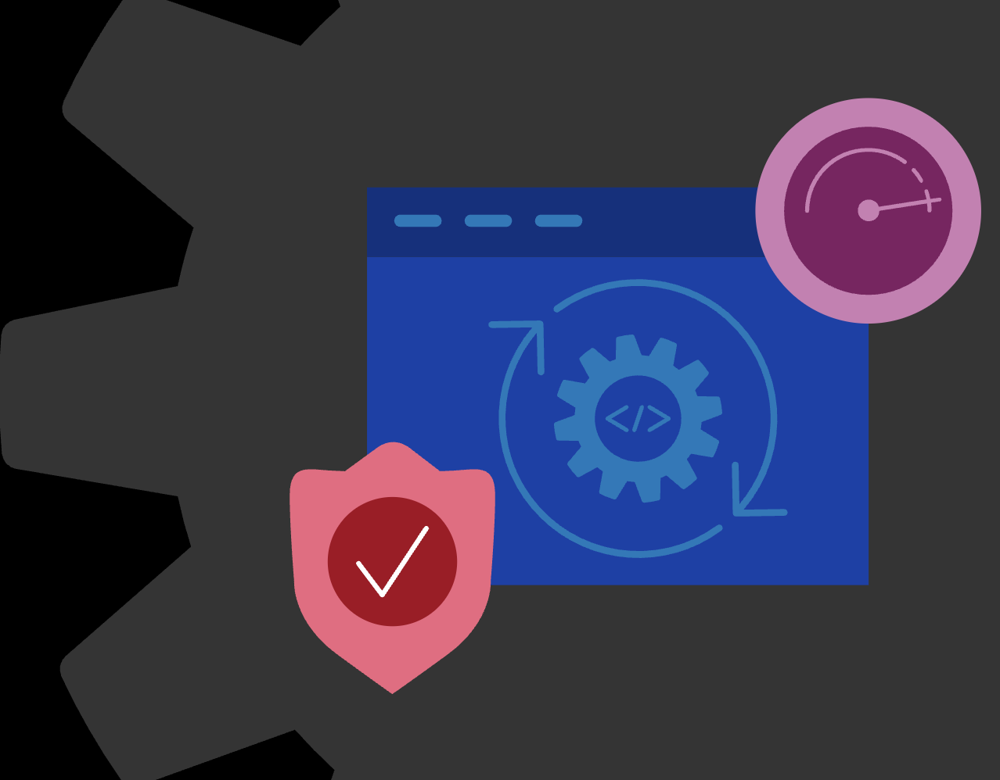

I’ve had the privilege of working with amazing customers to deliver exceptional products and create impactful customer experiences. Below are some of the customer programs I have led:
BIG-IP Next EA & LA Customer Programs
Engine Teardown Customer Program with Lufthansa Technik
BIG-IP Next EA & LA Customer Program
At F5, I led the Early Access (EA) and Limited Availability (LA) programs for BIG-IP Next, a next-generation solution redefining application delivery.
Duration: October 2021 - April 2022
Role: Product Management Engineer & Program Lead
Overview
As a Product Management Engineer, I led the Early Access (EA) and Limited Availability (LA) programs for BIG-IP Next, a next-generation solution redefining application delivery.
My focus was on turning technical insights into customer-driven solutions by collaborating with many teams and engaging with customers to refine BIG-IP Next before its full launch. These programs helped gather valuable feedback, align stakeholders, and drive adoption through hands-on demonstrations and real-world use cases.
What is BIG-IP Next?
BIG-IP is a networking and security solution that keeps websites and apps fast, secure, and reliable. It powers and protects an estimated 70% of mobile and web applications worldwide—so if you've used your phone today, BIG-IP likely played a role!
🚀 BIG-IP Next is the next-generation evolution of this system—designed to be faster, lighter, and built for modern cloud and hybrid environments.
EA and LA Programs: Driving Product Success
These programs refined the product, addressed issues early, and ensured customer needs were met, leading to a smoother and more successful launch.🛠 Early Access (EA) Program
- Provided select customers early access to test BIG-IP Next before wider release.
- Focused on gathering feedback, identifying issues, and refining features based on real-world use.
⚙️ Limited Availability (LA) Program
- Allowed selected customers to deploy the near-final product in real-world environments.
- Ensured performance, security, and user experience met expectations before full release.
Key Contributions
- Early Access and Limited Availability Programs: Led these programs for BIG-IP Next, coordinating across departments to gather requirements and ensure a successful product launch.
- Customer Collaboration: Worked closely with premium customers like Mastercard, Walmart, and Ford to deliver tailored solutions and refine the product based on feedback.
- Go-to-Market Strategy: Developed sales enablement materials, live demos, and documentation to align customer needs and drive adoption.
Notable Customers
In running this program, I worked with 19 partners and customers, including: 🏢 Walmart | 🚗 Volkswagen | 🚀 Ford | 💳 MasterCard | and 🏦 Wells Fargo.
To ensure a great onboarding experience, I helped customers integrate BIG-IP Next with Virtual Edition (VE) and Hardware-based deployments, depending on their environment.
Results & Impact
- ✅ Improved Customer Documentation: Resolved gaps in customer-facing documentation, making it clearer and more user-friendly.
- ✅ Refined Use Cases: Worked with EA customersto refine real-world use cases, ensuring the product delivered value.
- ✅ Enhanced Go-to-Market Readiness: Created workflow guides and demo outlines for the Limited Availability phase to help teams navigate key features.
- ✅ Aligned Cross-Functional Teams: Ensured consistent messaging and adoption strategies across multiple departments.
- ✅ Boosted Software Quality: Addressed customer-reported bugs and enhanced overall product stability.
Outcome
BIG-IP Next: The next-generation BIG-IP product I helped shape and bring to market in running this program. Learn More about BIG-IP Next.
It also could not have been possible without collaboration from all our product managers, engineering directors, senior leadership, and customer account teams.
Engine Teardown Customer Program
Role: Intern and Customer Program Lead
Duration: November 2018 - June 2019
Overview
This was my core internship project at Lufthansa Technik, focused on improving the process by which customers could view their engine repairs. Aircraft engines consist of hundreds, sometimes thousands, of parts—ranging from small screws to large components. Previously, the company managed this complex process using an Excel spreadsheet with individual line items for each part.
Key Contributions
- Redesigned the customer-facing repair process to enhance transparency and usability.
- Developed a digital solution to replace manual Excel tracking, improving data accuracy and accessibility.
- Collaborated with engineers and technicians to streamline engine teardown workflows.
- Ensured customers could easily track and understand the status of their engine repairs.
Notable Customers
In running this program, I worked with over 20 partners and customers to onboard them into the new engine teardown system, including Rolls Royce, Lufthansa, Eurowings, and Pratt & Whitney.
Results
- Increased efficiency by reducing manual tracking errors.
- Improved customer satisfaction through enhanced visibility into the repair process.
- Streamlined collaboration between internal teams and customer-facing operations.
Outcome
This project transformed the engine teardown repair tracking process at Lufthansa Technik, showcasing my ability to tackle complex challenges and deliver customer-focused solutions that improve operational efficiency.
Technical Details
To learn more about the technical background, view the technical details on another part of my portfolio site here.